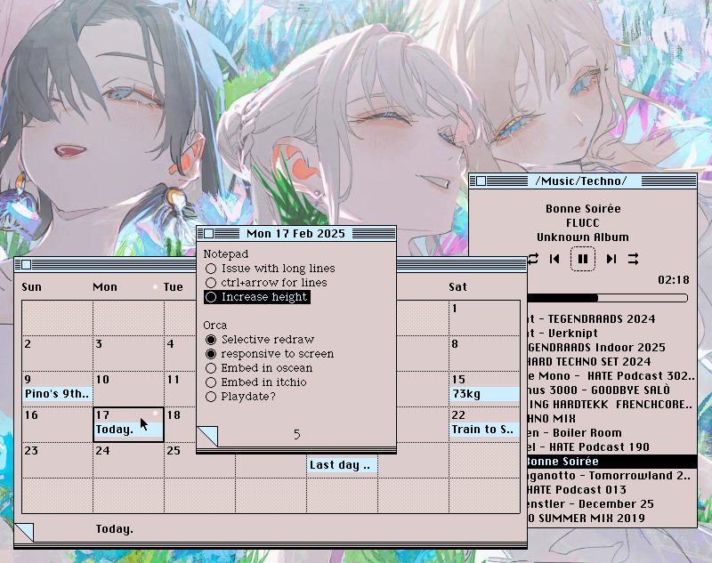
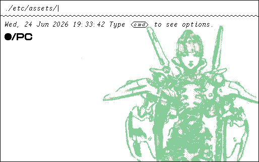
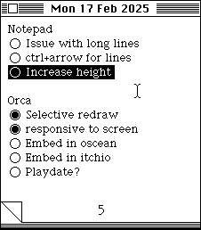
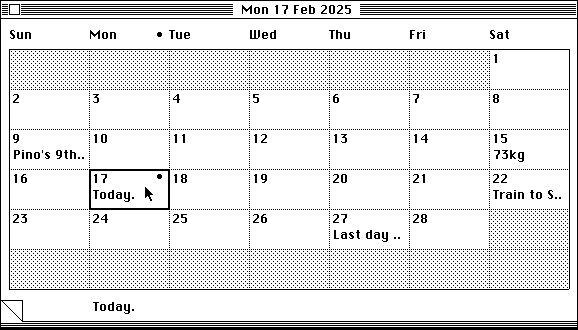
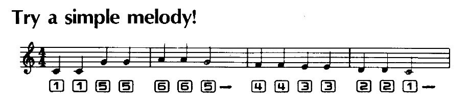
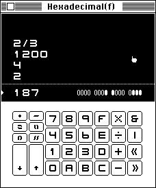
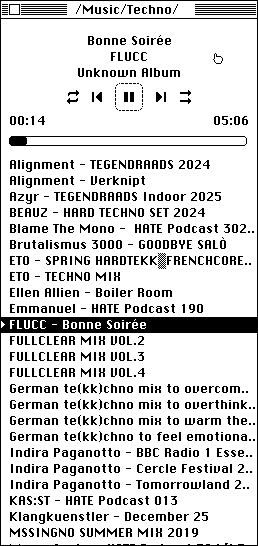
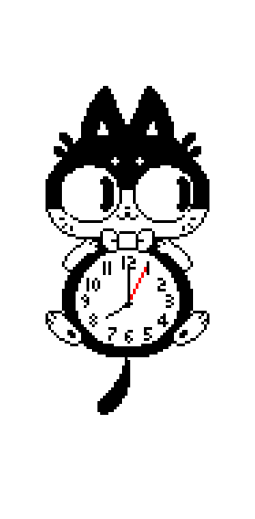

A collection of Varvara programs from an alternate past.
These are the principal utilities that I have running at all times while I work on the computer. They started off as ports of Macintosh System 7 programs, but have since been standardized and optimized to do as little redraw and disk access as possible.
They all support window shade, of course.
Unix systems
To make a rom usable across your unix system like an application, edit ~/.bashrc, and make the location of your Uxn emulator(example: ~/bin) visible by adding the lines:
export PATH=$PATH:$HOME/bin alias calendar='uxn11 ~/roms/calendar.rom' alias notepad='uxn11 ~/roms/notepad.rom' alias noodle='uxn11 ~/roms/noodle.rom' alias oekaki='uxn11 ~/roms/oekaki.rom' alias turye='uxn11 ~/roms/turye.rom' alias theme='uxn11 ~/roms/theme.rom' alias left='uxn11 ~/roms/left.rom' alias nasu='uxn11 ~/roms/nasu.rom' alias nebu='uxn11 ~/roms/nebu.rom' alias dexe='uxn11 ~/roms/dexe.rom' alias cccc='uxn11 ~/roms/cccc.rom' alias m291='uxn11 ~/roms/m291.rom' alias drifblim='uxncli ~/roms/drifblim.rom' alias drifloon='uxncli ~/roms/drifloon.rom' alias uxnfor='uxncli ~/roms/uxnfor.rom' alias uxnlin='uxncli ~/roms/uxnlin.rom' alias hx='uxncli ~/roms/hx.rom'
After saving, run source ~/.bashrc to apply your changes, and enjoy calling the programs from anywhere, like:
left src/main.tal
•/PC
M/PC is a concatenative operating system for Varvara, inspired by Openfirmware, designed to manage files on system without a file browser. It uses the postfix notation, meaning that the function success their operands:
( Get the number of bytes in folder/file_name ) folder/ file_name cat len dec
The interface uses a single prompt at the top of the screen to input commands:

Controls
The operating system can be used largely without a keyboard to navigate folders and launch roms:
- left/right Navigate stack
- A Run selection
- B Directory
Wallpaper
On boot, M/PC will try and draw an ICN file named wallpaperWWxHH.icn, where WW is the width of the screen divided by 8 in hexadecimal, and HH the height.
Kiosk
To start M/PC as a BIOS rom so that when the user presses F4, Varvara returns to the BIOS instead of triggering a reboot, launch with arguments:
uxnemu m_pc.rom orca.rom run
Reference
It comes loaded with a few primitives to manage files and file names.
dir ( -- [f] ) Put the file names in the current location on the stack. mov ( path -- [f] ) Move the current location to current/path, then do dir. now ( -- date time ) Puts the date Tue, 23 Jun 2026, and time 11:48:45 on the stack. run ( f.rom -- ok ) Load and run the rom file, return with F4. icn ( f.icn -- ok ) Draw the icn file on the background. len ( f -- hex ) Put the length of a file in hexadecimal. put ( body f -- ok ) Create a file with the content of body. get ( f -- body ) Put the content of a file on the stack. cpy ( fsrc fdst -- ok ) Copy the content of fsrc into fdst. era ( f -- ok ) Erase file. ren ( fsrc fdst -- ok ) Rename file fsrc into fdst. pop ( a -- ) Pop item at the top of the stack. dup ( a -- a a ) Duplication item at the top of the stack. ovr ( a b -- a b a ) Copy second item to the top of the stack. swp ( a b -- b a ) Swap first two items. dec ( hex -- dec ) Convert hexadecimal number to decimal. hex ( dec -- hex ) Convert decimal number to hexadecimal. cat ( a b -- ab ) Create a new item made of the joined names of the top two items. cmp ( a b -- bool ) Compare the names of the top two items. and ( a b -- bool ) Put true if both items are true. ora ( a b -- bool ) Put true if either item is true. out ( a -- ) Output item to Console/write. bye ( -- ) Quit.
- Source, Latest
- Repository
- Support: Manifest Theme Snarf
A note pad.
An original design by Donn Denman for the Macintosh.
- Source, Latest

A calendar.
Press enter to add or edit an event. Events are recorded in a relative text file simply called by the current year, the content is a date in the YYYY-MM-DD format, a tab and the event name:
2026-02-04 Movie Night w/ Alex, 8pm 2026-04-22 Earth Day Meetup @ Catal, 5pm ..
- Source, Uxntal
- Repository

A calculator.
The CCCC calculator is a 16-bit postfix calculator that uses fractions as primitives. It includes two special operators, the reciprocal operator and the yet unnamed operator that is the mirror of a division, where instead of putting the first whole number over the second, it makes whole numbers of the numerator and denominator. The Factorization Mode displays the prime factors each number on the stack.
Basic operations
- 0-f numbers
- +-/* arithmetic
- &|<> bitwise
- tab toggle base
Stack operations
- ent push
- ! bsp pop
- % swap
- " duplicate
- ~ esc clear stack
The calculator plays notes inspired from the Casio VL-80, you can use it to play little tunes.

- Source, Latest
- Repository

A music player.
This player was originally created to test an experimental feature of Uxn11 that allows Varvara to communicate with non-uxn programs, but has since become the only music player that I use. It works as a front-end client to mpg123. The project was created in collaboration with d6.
- Source, Latest
- Repository

A catclock, uh.
This Uxntal implementation of the catclock was created in collaboration with Rekka Bellum.
Catclock is originally a X10 program by Tony Della Fera, Dave Mankins, Ed Moy, Deanna Hohn and Philip Schneider, crafted for entertainment, in the late 1980's. It was also ported to the Plan 9 operating system by Tom Duff, which is where I first came across the catclock.
- Source, Latest
- Repository
- Obscure X11 tools

incoming: azolla research faqs aesthetics 2025